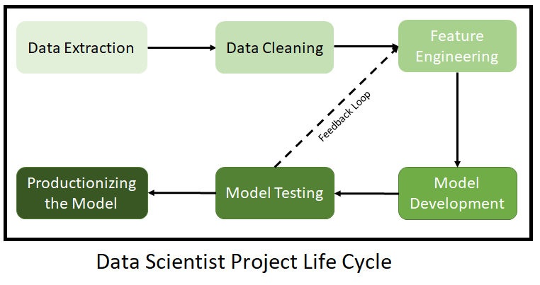

This is my first post documenting my journey to become a machine learning engineer. You can consider this post as the answer to the interview question “How do you that you want this exact job?”. Short answer: because I have researched enough and know the difference between these all the jobs. Long answer: read down.
Machine Learning (ML), Artificical Intelligence (AI), Data Science (DS):
AI is the catch-all phrase to describe techniques that make machines display “intelligence” similar to humans in some sense. The most famous example is the ability to recognize a cat in the picture. ML is an approach in AI. There are other approaches such as symbolic artificial intelligence, but we all know which one dominates. A side note: Deep learning (DL) is an approach in ML. One good way to think about ML is it is trying to fit a function to the data at hand. DL tries to accomplish this with neural network, which was proved to be able to simulate any continuous function (with enough size and data) and to have stellar results.
DS is the science of extracting insights from data. Simply put, it is statistics paired with human expertise. One example is sabermetrics, and if you want some entertainment, watch Moneyball. ML techniques, because of their usefulness, have found their way into DS, with success, to put it mildly.
“Data! Data! Data!” he cried impatiently. “I can’t make bricks without clay.” - Sherlock Holmes
A key takeaway from this is the emphasis on data. All the shiny models and dashboards will cease to exist without data. So whatever you want, being able to work with data is expected.
Next, we will try to answer the question “What exactly is working with data?” by turning to the field of business analytics.
Business Analytics:
For any reader who feels this violent jump is troublesome, we will likely to work for a company a.k.a a business. And in business, data science is called business analytics, or business intelligence. It is totally okay and possible to work in data science outside a business, such as trying to find out if the legalization of abortion in the US reduced crime rate (this is definitely not a Freakonomics reference).
Simply put, business analytics is data science in the context of a business. From data about performnace of the company, you want to extract insights to do better i.e. expose and remove flaws, determine whether a new service is viable or not, etc. Business analytics are divided into 3 stages:
Descriptive Analytics: If you are thinking about descriptive statistics when you read this, bingo. The goal at this stage is to uncover historical trends and anomalies. We capture that with mean, median, standard deviation, quantiles, inter-quarter range, etc. Little ML is involved at this stage. One example is analyzing the relationships between favourite artists and genres of music of the subscribers to the music streaming service.
Predictive Analytics: This is when ML models come into play. The goal of this stage is to make inference about the future from the patterns we dig out in the last stage. To continue with the example, now we want to predict user’s ratings to a new artist that we may introduce to them through our streaming app.
Prescriptive Analytics: From the insights of previous stages, now we can formulate strategy and take actions to benefit from the predicted outcomes. It means going on and recommend new artists of the same genre to an user whom you are quite certain will respond positively to the recommendations, and not doing so otherwise.
The jobs and responsibilities of a data-whoever varies based on the stage they are at. Let’s explore this in-depth.
Different stages, different jobs:
Data Analyst:
For a data analyst, his jobs mainly involve stage 1. He is given a data set, extracts insights from the data, and then visualizes and report the findings back to stakeholders.
Data analysts are concerned with the questions What? and Why?. Here are the abilities data analysts are expected to have, listed by the stages in the diagram: 1. Getting your hands on the data. This may involve using SQL, calling API to an online database. 2. Loading, cleaning, and exploring the data. In Python, this will most likely mean Pandas and Matplotlib/Seaborn (for tabular data). There are other tools such as Tableau and Power BI that can also be used. Note: Exploring here means both describing the data - calculating means, medians, interquartile range, etc. and finding plausible reasons explaining the data characteristics, e.g. “Why does teenagers make up the majority of our customers?” 3. Reporting: It can be a written report or a meeting to communicate the findings to the stakeholders, or a dashboard that helps another team (e.g. sales) respond better to what you have found. It is likely that you will write you report with Microsoft Words, which will contain visualizations from above i.e. using Matplotlib/Tableau/Power BI.
Data Scientist:
For a data scientist, the jobs will be more about predictive and prescriptive analytics. He will need to act on the insights that data analysts or he has found, often with the help of ML.
Two notes:
- He will need to sit through all these meetings with the data analyst team.
- In the case of no data analyst, it means that the data scientist must do the job of the data analyst first - getting the data, extracting insights - basically get to know the data well before starting doing anything. (As a consolation, he may not need to organize meetings.)
Data scientists are concerned with the question What will happen? and If so, what we will do? This leads to these abilities that data scientists are expected to have, listed by the stages in the diagram: 1. Getting the data. Again, SQL and API calling are your friends. However, for a data scientist, the volume of data that you process may be even larger, and you sometimes are expected to work with a data engineer team to get the data. 2. Cleaning the data. The purposes are twofold: you need to get used to the data, and you need to prepare it for subsequent steps involving the models. In Python, you will want to comfortably work with Pandas and Matplotlib, but sometimes you will go a level lower with Numpy. 3. Feature engineering. With this, we get deeper into ML.